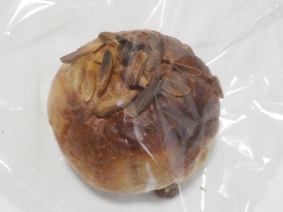
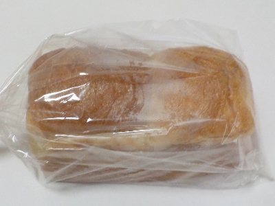
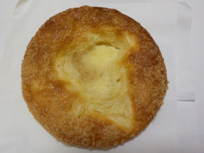

ル コションドール出西のマスカットレーズンのプティパン。
更新日 : 2025/12/20

焼き色がしっかりあるパンを見つけました。実際とっても香ばしかったけど、コゲ感が強かったので選んで失敗したかなと思いました。
しっとりとしていて弾力感があるパンに甘いレーズンが入ってて、パン自体は美味しかったです。
価格は165円でした。
島根県出雲市斐川町出西3368
更新日 : 2025/12/20

焼き色がしっかりあるパンを見つけました。実際とっても香ばしかったけど、コゲ感が強かったので選んで失敗したかなと思いました。
しっとりとしていて弾力感があるパンに甘いレーズンが入ってて、パン自体は美味しかったです。
価格は165円でした。
更新日 : 2021/05/24

パンのビニールに蒸気が付いてます。しっとり感が出てますね。
湯種パンなのでモチモチです。ふわふわでつまむと潰れるけど、弾力があるのでもとに戻ります。湯種が多いんでしょうか？モチモチ感がとても強力に感じました。
パンの耳の部分は柔らかいんだけどモチモチ感がより強く、とても噛み応えがありました。その食感が独特でいいなと思いました。
食べてて「これは食パンなのか？」なんて思いましたが、これくらい個性的だったらまた食べたいかなとも思いました。
価格は475円でした。
更新日 : 2018/11/24

出西窯は観光スポットになっているようで、お客さんが多かったです。
パン屋さんも大人気で、店内は大勢の人でした。
沢山商品が売れていましたが、次々と焼きたてのパンが出来上がっていました。
チーズと砂糖の甘い菓子パンを買いました。シンプルな味で美味しかったです。
ちょっとのどかな場所にあるのでドライブにぴったりです。お店で買ったパンを店内で食べることはできないので、ドリンクを買って行って車内で食べるといいかもしれません。
お店の名前は ル コションドール出西 です。難しくて覚えれないかな。